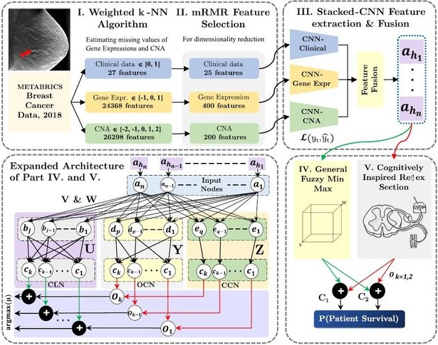

|
====WEBSITE UNDER UPDATE: WILL BE UP BY 18th DEC, 21==== I am a final year undergraduate student at the amazing Thapar Institute of Engineering and Technology, India majoring in Mechanical Engineering with a Minor in Computer Science. I am broadly interested in the fields of Artificial Intelligence, Continual/ Life-long Learning, Cognitively-Inspired Computation, Deep Learning and Computational Biology. I was fortunate enough to collaborate with some awesome mentors. I worked with Prof. Vinay Kumar and Prof. Rahul Upadhyay at the Thapar Artificial Intelligence Lab (TAiL), and Prof. Neeraj Kumar on another research projects. I have been working closely with Prof. Apurva Narayan at the UBC-IDSL Lab starting from Summer 2021. I also spent a wonderful time working with at School of Computer Science at the Carnegie Mellon University as a Research Intern working actively on Continual Learning. CV / Github / LinkedIn / Google Scholar |

|
|
|
|
|
|
|
Guide: Prof. Apurva Narayan, The University of British Columbia, Canada Paper / Slides / IEEE BIBE 2021 Despite progress in Artificial Intelligence, in silico B-cell epitope prediction has low levels of accuracy compared to NMR spectroscopy and X-ray structural analysis. Can we improve precision rates without larger datasets? |
|

|
Guide: Prof. Neeraj Kumar, Computer Science and Engineering Department Paper / Video / MICCAI 2021: Predictive Intelligence in Medicine (PRIME) Proposed a Multimodal Cognitively-inspired model that attained State-of-the-art Accuracy, framing the task as an Incremental Learning Problem. Proposed approach allows the model to continually update its learned feature space on non-stationary multimodal data stream. Demonstrated the model's ability to learn complex relationships between different multimodal attributes, training on severly imbalanced and limited data by mapping it to a high-dimensional fused feature space. |

|
Guide: Prof. Neeraj Kumar, Computer Science and Engineering Department Paper / NeurIPS 2021: ML for Public Health 2021 Proposed a new paradigm to address the challenges faced in designing current Computer-Aided Diagnosis Models. |

|
Guide: Prof. Vinay Kumar, Thapar Artificial Intelligence Lab Paper / Poster / NeurIPS 2021: AI for Science: Mind the Gaps Proposed a fuzzy intelligence model for short (<30 aa) AMP activity prediction, and its ability to learn on limited and severely skewed high-dimensional space mapping is demonstrated over a set of experiments. The proposed model significantly outperforms state-of-the-art ML models trained on the same data. |
{kind=link}
|
|
Guide: Prof. Vinay Kumar, Thapar Artificial Intelligence Lab Paper / Poster / NeurIPS 2021: AI for Science: Mind the Gaps/ Human-Centered AI The AI community being obsessed with state-of-the-art scores (80% papers NeurIPS) due to which the environmental metric of models remains unreported. Here we proposed a novel evaluation metric, i.e., NATURE, for measuring the environmental performance of AI Models. Presented an in-depth attention highlighting the current gaps in Neuromorphic Computing and demonstrated mathematically why SNNs are better compared to traditional ANNs. |
{kind=link}

|
Guide: Prof. Rahul Upadhyay, Thapar Artificial Intelligence Lab Paper / Video / IEEE ICUMT 2020 Developed a real-time assistance system to aid the visually impaired through recitation of surrounding scene descriptions generated using a Deep Recurrent Architecture combining CNN based feature extraction with Long-Short Term Memory (LSTM). |
|
|
Guide: Prof. Bikramjit Sharma, Mechanical Engineering Department Paper / Slides / IEEE GCAT 2021 Pulmonary Barotrauma is a major cause of Ventilator-Induced Lung Injury in COVID-19 patients. Can mechanical design and control system improvements address this challenge in a cost-constrained scenario? |
|
|
|
|
Thapar Developer's Student Club Code Developed an end-to-end Self-driving car using CNN to map pixels from front-camera to steering angles on a simu-lator. This deep learning approach required minimum training data & the system learned to steer, with or withoutlane markings, on both local roads & highways, even with unclear visual guidance in various weather conditions.The vehicle could identify traffic signs & avoid collisions. |
Major Academic Achievements
- Selected to deliver a 'Lightening Talk' at NeurIPS 2021: ML for Public Health on first-authored work
- Received MITACS Globalink Research Award 2021 to pursue funded project at University of British Columbia
- Awarded Students Undergraduate Research Graduate Excellence 2021 by IIT Kanpur (<4% acceptance)
- Winner of the University of Queensland Engineering Design Hackathon, 2020
- Best Research Paper Award at the ICCAME 2021 Conference
- Received Dean's Merit List Scholarship worth 50% Tuition Fee for being in Top 03% Dept. Ranks in AY 2019/20.
- Achieved All India Rank 1 in ICSE 2015 Computer Science exam out of 0.16 Million applicants
- Secured World Rank 98 in the International Olympiad of English Language 2016, Special achievement award
- Secured World Rank 264 in the International Olympiad of Mathematics 2015, Special achievement award
- Cleared the Uttar Pradesh State level of the National Talent Search Examination (NTSE) 2015
- Bagged two Bronze Medals in 6th Intl. Young Mathematicians' Convention in both individual and team contests
Technical Skills
- Computer Science: Computer Programming, Object-Oriented Programming, Data Structures and Algorithms, Machine Learning, Database Management Systems, Computer Networks, Operating Systems
- Mathematics & Statistics: Mathematics-I (Sequences & Series, Advanced Calculus), Mathematics-II (Linear Algebra, Complex Analysis, Differential Equations), Numerical Analysis, Optimization Techniques, Graph Theory & Applications*
- Key Mechanical Engineering Courses: Engineering Materials, Mechatronics Systems, Computer-Aided Design & Analysis, Mechanics of Deformable Bodies, Solids & Structures, Mechanics of Machines, Machine Design- I & II*, Dynamics & Vibration, Applied Thermodynamics, Fluid Mechanics & Machinery*, Work Study & Ergonomics*
- Online Courses: CS330 - Deep Multi-Task and Meta Learning(Stanford), CS231n - Convolutional Neural Networks for Visual Recognition(Stanford), CS229 - Machine Learning (Stanford), 6.S191 - Intro to Deep Learning(MIT)
- Currently Undergoing
Technical Skills
- Programming Languages: Python, C, C++, JAVA, MATLAB, HTML
- Libraries and Research Tools: Scikit-Learn, Pandas, PyCaret, NumPy, Seaborn, Matplotlib, Git, LATEX, Inkscape
- Softwares and Simulations: OpenCV, Tensorflow, Keras, SOLIDWORKS, PTC-Creo, AutoCAD, ANSYS
Contact